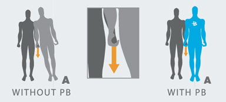
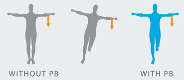

| Power Balance ellenállási tesztek: |
|

POWER BALANCE TESZT I. Álljon egyenesen, szorosan zárt lábakkal, oldalsó középtartásban ('T' betût formázva). Emelje fel az egyik lábát és kérjen meg egy másik személyt, hogy lassan, de határozottan nyomja le az Ön csuklóját (a felemelt lábaddal megegyezõ oldalon), amíg Ön kibillen az egyensúlyából. Helyezze a Power Balance terméket bárhová a testén és próbálja ki a tesztet újra. A legtöbb személynél azonnal érezhetõ a növekedés az ellenállóerõ és az egyensúly terén. |
|

POWER BALANCE TESZT II. Álljon egyenesen, szorosan zárt lábakkal, nyújtsa elõre a kezét és hajoljon le a lábujja felé. Helyezze fel a csuklójára a Power Balance terméket és csinálja meg a feladatot újra, érdekes módon lejjebb tud hajolni. |
|
POWER BALANCE TESZT III.
Álljon egyenesen, szorosan zárt lábakkal, nyújtsa elõre egyik kezét és vízszintesen tartva fordítsa a háta mögé addig, amíg csak bírja, jegyezze meg mire mutat. Helyezze fel a csuklójára Power Balance terméket, és ismételje meg a feladatot. Most sokkal tovább bír fordulni.
|